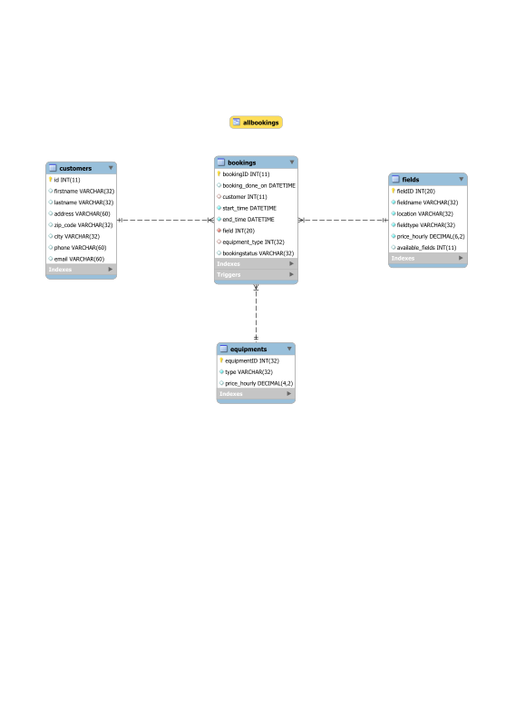
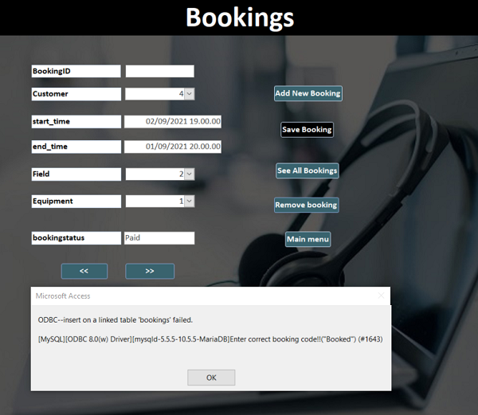
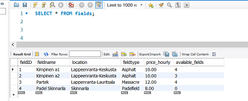
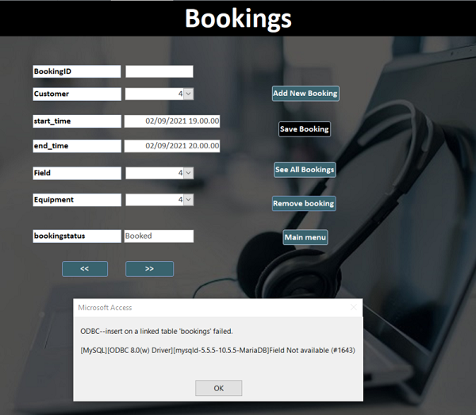
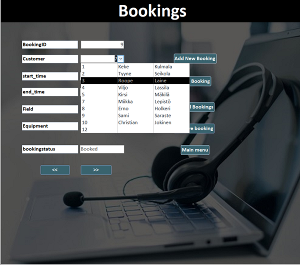
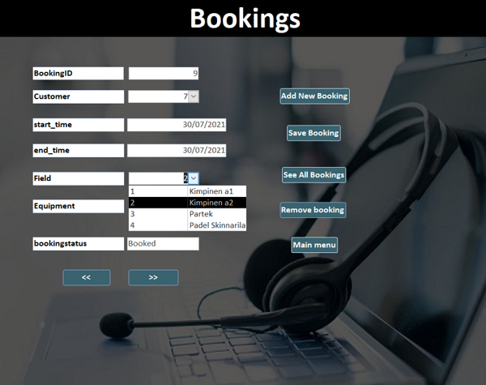
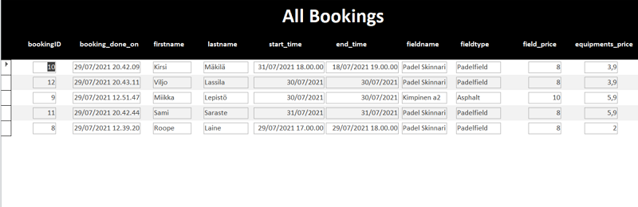
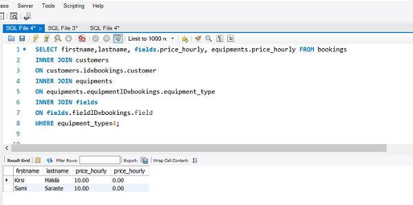
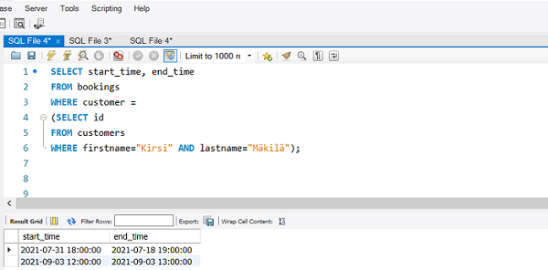

When creating this database we imagined a scenario where customers will call or visit an office to book tennis playing ground and equipments. It stores the booking information for customers. New customers should be registered first to make a booking. Additional information which is being stored is information about customers, fields and equipments. It shows in real time how many fields there is available when booking. Same with renting equipment.
This database was created manually and EER diagram reverse engineered. View was created for employees to see all the bookings in one place provided only with information needed. We used triggers to show real time available fields and equipments so there won’t be double booking on same field. Every information in this database was used by contact information generator.
We have created also UI for employees working in office to book customers in more efficiently. This thanks to Jean who had skills to make this happen. It was created with Microsoft Access and Mysql database is connected to it.
The original plan of this database is shown in the image below. It’s done by using Lucidchart tool.
The image below shows the final ER chart of this database. We created it with queries and reverse engineer. As you can see it’s quite different from raw plan above. There was lot to fix on that.
In this work we used mysql workbench to create and edit database tables. Tables have been created using the following syntax:
CREATE TABLE table_name(
column1 datatype,
column2 datatype,
column3 datatype,
...
);
Link to the tables queries
When making a booking for the first time, a trigger has been set to detect a correct booking code “Booked".
Booking will only be saved if the booking code is used correctly. In other case it will give the following error:
"Enter the correct booking code". This is achieved with the help of the trigger "fields_count".

Another trigger which is used in following forms prevents booking a field if it’s not available on the list.
There is a limited number of fields available for each field name.
When booking is made with the correct booking code, the number of available fields will be reduced by 1.
An error "Field not available" will be returned to the user. This is achieved with the help of the trigger "fields_count4".
The image below shows a situation where the available number of fields for the fieldId 4 is zero.

In the following image, an attempt to book the fieldId 4 will return the trigger's error.

When a specific booking is deleted, the number of available fields for the field name in the booking will be raised by 1 (+1).
This is achieved with the help of the trigger named: ”fields_count1".
The bookings form has dropdown menu for Customer, Field and Equipment.
User can see the list of available options and choose the right option.


A view has been made combining customer, booking, field and equipment tables.
With this view user is able to see all the important information on bookings.

Link to the view query
In addition to store informations, the database can be used also to retrieve some information depending on what is needed.
Here are some examples of that:
SELECT firstname,lastname, fields.price_hourly, equipments.price_hourly FROM bookings
INNER JOIN customers
ON customers.id=bookings.customer
INNER JOIN equipments
ON equipments.equipmentID=bookings.equipment_type
INNER JOIN fields
ON fields.fieldID=bookings.field
WHERE equipment_type=4;

SELECT start_time, end_time
FROM bookings
WHERE customer =
(SELECT id
FROM customers
WHERE firstname="Kirsi" AND lastname="Mäkilä");

This project has taken me more time than I thought It would take in the beginning. We spent about 12 hrs in our group meeting sessions. During the meetings we could plan together what to do and then share tasks to work on later independently. In the beginning we had no plan to make a UI, but since it might increase our grade, i tried anyway and my teammate approved it! I wrote triggers and view queries, filled tables with informations, made Ms access connection to mysql database, created forms which designs were later edited by my teammate. I have also wrote half of the html report. I did not write down how many hours I used on the access and html part, but its surely over 20 hrs. The outcome of this project might not be the best but in my opinion it is better than what I was expecting from the beginning, but I think it was worth to do it since I got the opportunity to practice and understand deeply what I learned from the course. Based on what I said above I would give myself a 4 grade for this project.
We had together meetings via Teams about 4-5 times where we did overall planning how get this project forward. Above that I did the queries with EER diagram. I inserted information in mysql manually writing and Jean via MS Access to test it works. We took UI version in use because it worked better. I didn’t have skills to html or MS Access so I better leave credentials out of those and thank Jean for very impressive job of managing those well. I was also looking what to write into html file and how to convert files to transparent. And also a bit visual element of UI backgrounds. All files used in this work are licensed so we are not breaking any copyright terms. It’s hard to give myself scores because I am not the IT professional here so I trust the professional to give the right points. Because professional can see things above in more detailed way.